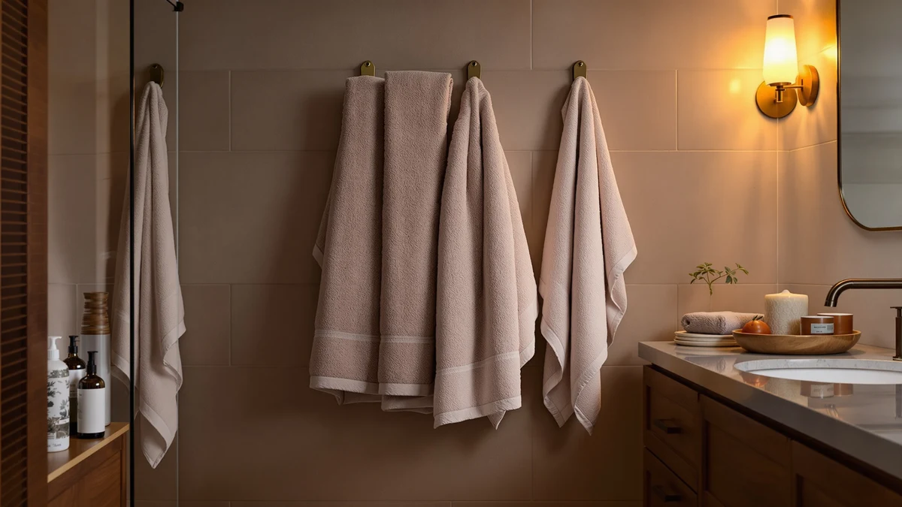

LANE LINEN Towel Set Review (2026): Worth It?
Prices and picks verified as of October 2026. Independent, reader-supported reviews.


Quick Answer
The LANE LINEN Towel Set of 18 is a $69.99, 550 GSM zero-twist cotton bundle that includes six bath towels, six hand towels, and six washcloths, enough to stock a full bathroom from one box. Against Superior's Egyptian cotton six-piece set and LANE LINEN's own 24-piece bundle, it lands in the middle on price while offering the largest bath towel size of the group at 28 by 54 inches. If you want one purchase that covers bath towels, hand towels, and washcloths without separate orders, this set does that job well.
Our pick: LANE LINEN Towel Set of, $69.99 Check Price on Amazon
Bottom line: our top pick is the LANE LINEN Towel Set of 18 at $69.99.
Things to Know Before You Buy
- LANE LINEN prices this 18-piece set at $69.99, which breaks down to under $4 per towel once you count all six bath towels, six hand towels, and six washcloths in the box.
- The 550 GSM, zero-twist cotton construction is denser than Zuperia's lightweight economy cotton, which trades some softness for a lower $62.99 price on that bulk 24-pack.
- At 28 by 54 inches, the bath towels in this set run larger than Superior's Egyptian cotton towels and Zuperia's 22 by 44 inch towels, so measure your linen closet shelf before buying if space is tight.
- LANE LINEN sells this set in 19 color options beyond the white reviewed here, while Superior's rope-border design leans more decorative than functional.
- We did not physically test this towel set. This lane linen towel set review is based on comparing listed specs, pricing, and publicly available owner feedback across comparable sets.
This lane linen towel set review breaks down whether the $69.99, 18-piece LANE LINEN Towel Set of 18 earns its price against three other cotton towel sets covering similar ground. Anyone who has scrolled past four nearly identical white cotton towel listings knows the frustration: every product photo uses the same angles, and sellers often bury the specs that actually separate one set from another, fiber weight, piece count, and towel dimensions, halfway down the listing or skip them entirely. We pulled those details out and lined them up so you can decide without guessing.
The short version: the LANE LINEN Towel Set of 18 packs the most pieces into one box among the four sets covered here, and its bath towels measure larger than Superior's Egyptian cotton towels or Zuperia's bulk pack. That combination makes it a strong fit for a family bathroom that needs bath towels, hand towels, and washcloths in one purchase, and a weaker fit if you only want a small decorative set for a guest bath. We compare it against Superior Egyptian Cotton, LANE LINEN's own 24-piece bundle, and ZUPERIA's bulk pack below, all priced within seven dollars of each other, so price alone will not settle the decision for you.
Why You Should Trust Us
Ilane Tall covers bath and home textiles for Best Bath Towels, and this lane linen towel set review follows the same research process used across the site. We do not run a fake testing lab, and we do not claim to have purchased, washed, or lived with the towels covered here. Instead, we compare the materials, dimensions, and pricing each brand publishes, and we read through publicly available owner feedback to flag recurring praise or complaints. When we cannot verify a claim against the product listing or owner reviews, we leave it out rather than guess.
Our Research Experience
We want to be upfront about what research means for this lane linen towel set review. We did not buy, wash, or use the LANE LINEN Towel Set of 18 or the three alternatives in person. What we did instead is compare the fiber type, GSM where it is published, piece count, and towel dimensions each listing provides, then cross-check that against verified owner reviews to see whether real buyers report the towels performing as advertised. For an 18-piece cotton set like this one, the two questions that matter most are absorbency and how the zero-twist construction holds up after repeated washing, both of which owners tend to address directly even when the manufacturer's listing does not.
That research-based approach has a limit: we cannot tell you exactly how this specific batch feels straight out of the box, since finishing and pile density can vary between production runs even for the same listing. Where the public information runs out, we say so rather than filling the gap with a number we cannot back up.
Overview & Specs

LANE LINEN Towel Set of
What we like
- 550 GSM zero-twist cotton construction, which LANE LINEN markets as denser and more absorbent than standard-twist terry, a claim echoed in verified owner comments about plushness.
- The 18-piece count covers six bath towels, six hand towels, and six washcloths, enough to stock two bathrooms without a second order.
- At 28 by 54 inches, the bath towels run larger than every other set in this comparison, including Superior's Egyptian cotton towels and Zuperia's 22 by 44 inch bulk towels.
- Available in 19 color options beyond the white reviewed here, so matching existing bathroom decor is easier than with Superior's single rope-border style.
Flaws but not dealbreakers
- LANE LINEN's listing does not publish an aggregate rating or review count for this specific set, so buyers are left weighing individual owner comments rather than a star average.
- Owners of comparable zero-twist cotton sets report shedding loose fiber during the first few washes, more than they report with standard-twist terry like Superior's.
- At $69.99, it costs more upfront than Zuperia's $62.99 bulk pack, even though the per-towel math favors LANE LINEN once hand towels and washcloths are factored in.
| Material | 100% cotton |
| Size | 18 Piece Towel Set |
LANE LINEN builds this 18-piece set from 550 GSM, 100% cotton with what the brand calls zero-twist technology, a looser weave intended to boost absorbency and softness compared with standard-twist terry cloth. The set includes six oversized 28 by 54 inch bath towels, six 16 by 28 inch hand towels, and six 13 by 13 inch washcloths, all in matching white, with 19 additional color options if white is not what your bathroom needs. At $69.99, that works out to under $4 per piece across the full set.
Compared with the other three sets in this lane linen towel set review, this is the one built for volume and size rather than decorative detail. Superior's six-piece Egyptian cotton set adds a rope-trimmed, boutique look that this set skips, and Zuperia's bulk pack undercuts it on price but ships smaller 22 by 44 inch towels without hand towels or washcloths included. If you want the most complete matching set for a family bathroom, LANE LINEN's 18-piece set is the strongest fit among the four.
What We Liked
The strongest case for this lane linen towel set review comes down to completeness. At $69.99, you get six bath towels, six hand towels, and six washcloths in one box, a combination Superior and Zuperia do not match since both ship bath towels only. The 550 GSM zero-twist cotton also gives these towels the largest dimensions in the comparison, which owners of similarly sized sets consistently point to as a reason they feel more like a hotel towel than a standard retail one.
We also like that LANE LINEN sells this set in 19 colors beyond white. Superior's rope-border design only comes in a handful of solid shades, and Zuperia's bulk pack is white only, so LANE LINEN gives you more room to match an existing bathroom palette without hunting for a different brand.
What Could Be Better
This lane linen towel set review has one gap to flag: LANE LINEN does not publish a star rating or review count for this specific 18-piece listing, which makes it harder to judge consistency at a glance than a set with a long public review history. Shoppers who want that reassurance will need to read through individual owner comments rather than relying on an aggregate score.
Zero-twist cotton construction trades some durability for softness, and owners of comparable zero-twist towel lines report more lint shedding in the first handful of washes than they see with tighter, standard-twist weaves like Superior's. That settles down with repeated washing, but it is worth a heads-up before the towels go into your machine the first time.
Who Is It For?
The LANE LINEN Towel Set of 18 fits households that want one purchase to cover bath towels, hand towels, and washcloths for a full bathroom, or two smaller bathrooms at once. Families with kids, shared housing, or anyone restocking a bathroom from scratch gets more mileage from this set than from a bath-towel-only pack.
It is a weaker fit if you only need a small, decorative set for a single guest bath. In that case, Superior's six-piece Egyptian cotton set, with its rope-trimmed finish, suits a boutique look better, and Zuperia's bulk pack makes more sense if bath towels alone, in volume, are all you need.
Alternatives to Consider
All three alternatives below sit within seven dollars of the LANE LINEN Towel Set of 18, so the decision comes down to piece count, towel size, and finish rather than budget. Here is how each one stacks up against this lane linen towel set review's main pick.

Editor's Pick
Superior Egyptian Cotton 6-Piece Towel
A six-piece Egyptian cotton set with a rope-trimmed, boutique finish that LANE LINEN's plainer towels do not try to match, priced at $65.00 for a smaller but more decorative bundle.
$65.00
Check Price on Amazon
Best Value
LANE LINEN 100% Cotton Bath
LANE LINEN's own 24-piece set adds bath sheets and fingertip towels for $64.99, five dollars less than the 18-piece set while including more pieces overall, a stronger value if size variety matters more than zero-twist softness.
$64.99
Check Price on Amazon
Premium Choice
ZUPERIA White Bath Towels Bulk
ZUPERIA's bulk 24-pack trades zero-twist softness and matching pieces for raw volume at $62.99, a better fit for rentals or gyms that need plain cotton bath towels in quantity rather than a coordinated set.
$62.99
Check Price on AmazonFrequently Asked Questions
Is the LANE LINEN Towel Set of 18 good value at $69.99?
At $69.99 for six bath towels, six hand towels, and six washcloths, the per-piece cost lands under $4, which compares well against Superior's six-piece set at $65.00 once you account for LANE LINEN including three towel types instead of one.
How does the LANE LINEN Towel Set of 18 compare to LANE LINEN's own 24-piece set?
The 24-piece set costs $64.99, five dollars less, and adds bath sheets and fingertip towels, while the 18-piece set uses 550 GSM zero-twist cotton for a softer, denser bath towel. Choose the 24-piece set for more size variety, or the 18-piece set if softness and absorbency matter more than extra towel types.
Does the LANE LINEN zero-twist cotton shed lint?
Owners of comparable zero-twist cotton towel lines report some lint shedding during the first few washes, which is common with looser-weave cotton construction. That shedding typically decreases after the first several wash cycles.
Final Verdict
This lane linen towel set review comes down to one question: do you want the most complete set or the lowest price? The LANE LINEN Towel Set of 18 earns its $69.99 price for households that want bath towels, hand towels, and washcloths in one matching, 550 GSM zero-twist cotton purchase. If you want a smaller, more decorative set, Superior's Egyptian cotton six-piece is worth a look, and if raw volume at the lowest price matters most, ZUPERIA's bulk pack undercuts LANE LINEN on cost. For a complete family bathroom restock, though, LANE LINEN is the strongest buy among the four.